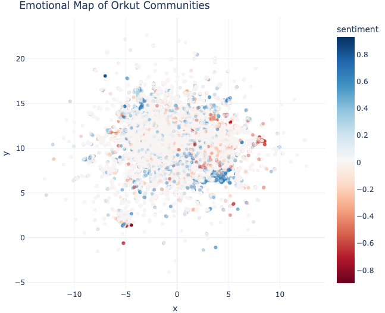

Text Mining Orkut’s Community Data with Python
Cultural Memory, Platform Neglect, and Digital Amnesia
2025-12-09
About Me

Have you heard of Orkut?
Follow along…
www.github.com/rodrigosf672/orkut-pydataglobal2025
Introduction
- Orkut shaped early Brazilian internet culture.
- Community names were a public form of self-curation.
- After 2014, almost all platform data disappeared.
- Only partial HTML snapshots survive.
Orkut Profile Example

A More Recent Profile Example

Why Orkut Matters
- Communities worked as a vocabulary of identity.
- No algorithmic feeds: users curated themselves.
- Names acted as expressive micro-texts.
Geographic Shifts (2004 → 2014)
| Country | 2004 | 2014 |
|---|---|---|
| Brazil | 5.16% | 55.5% |
| US | 51.36% | 3.3% |
| India | — | 18.4% |
| China | — | 6.4% |
| Japan | 7.74% | 2.7% |
Note
Orkut shifted from US-centric → Brazil + India + Global South
Platform Timeline
2004
───────────────────────────
Launch
2005
───────────────────────────
Massive Brazilian adoption
2007
───────────────────────────
India becomes major hub
2010
───────────────────────────
Infrastructure migration
2012
───────────────────────────
Feature decay
2014
───────────────────────────
ShutdownEnshittification Cycle (Cory Doctorow)
┌────────────────────┐
│ 1. User Benefit │
│--------------------│
│ Generous features │
│ Little friction │
│ Goal: attract users│
└─────────▲──────────┘
│
│ platform gains users
▼
┌────────────────────┐
│ 2. Business Benefit│
│--------------------│
│ More ads, partners │
│ Data extraction │
│ Goal: monetize │
└─────────▲──────────┘
│
│ platform extracts value
▼
┌────────────────────┐
│ 3. Platform Benefit│
│--------------------│
│ Hostile UX │
│ Feature decay │
│ Goal: maximize rent│
└─────────▲──────────┘
│
│ ecosystem collapses
▼
(users + creators leave)Platform Decline
- 51M+ communities lost.
- Almost all cultural material erased.
- Remaining content = inconsistent web snapshots.
Orkut Archive in the Wayback Machine

What Survives
- 124,988 recoverable community names.
- Variation across language, style, humor, identity cues.
- Each title = a micro-text of early social networking.
Important
Clusters represent linguistic similarity; not user groups.
Reconstruction Challenges
- No API
- Broken/partial HTML
- Layout varies by year
- Missing pagination
- Duplicate and inconsistent content
Reconstruction Approach
- Multiple CSS fallbacks
- Defensive parsing
- Deduplication
- Noise filtering
- Stored as CSV for reproducibility
Linguistic Foundations
- Community names encode stance, identity, humor, belonging.
- They form a unique record of early internet culture.
- Analysis combines stylometry and semantics.
Stylometric Features
Character length:
“eu te amo” → “eu te amooooo”Caps ratio: “EU TE AMO” vs. “Eu te amo”
Vowel elongation:
“nooossa”Punctuation elongation: “vem!!!” / “oi????”
Symbol density: “♥ eu te amo ♥”
Miguxês (k_style): “aki, keru, naum”
Semantic Features
- Multilingual embeddings (SentenceTransformers)
- UMAP projection
- KMeans / HDBSCAN / BERTopic clustering
Semantic Features
- Multilingual embeddings (SentenceTransformers)
- UMAP projection
- KMeans / HDBSCAN / BERTopic clustering
Preview of Analyses
In the interactive Quarto report, I’ll walk through:
- Language distribution
- Semantic space (UMAP)
- Stylometry (caps-lock, Miguxês)
- Topic modeling with BERTopic
- Sentiment structure
These plots reveal structure, style, and expressive patterns across community names.
Language Distribution

static preview — interactive version shown in the Quarto report
Semantic Map (UMAP)

static preview — interactive exploration in the Quarto report
Caps Lock Stylometry

static preview — deeper inspection in the Quarto report
Miguxês Stylometry

static preview — full analysis in the Quarto report
BERTopic: Micro-topic Barcharts

static preview — interactive version in the Quarto report
BERTopic: Intertopic Distance Map

static preview — interactive exploration in the Quarto report
Sentiment Mapping
static preview — interactive version in the Quarto report
Sentiment Interpretation
- Portuguese positive expressions are formulaic → cluster tightly
- Negative expressions vary syntactically → disperse
- VADER used cautiously (English model)
Recap of Analytical Findings
- Languages reflect Orkut’s cultural geography
- Semantic space shows clusters of humor, affect, fandom, locality
- Stylometry captures expressive registers
- BERTopic reveals micro-topics
- Sentiment patterns shaped by formulaic vs. varied expressions
Full interactive walkthrough is available in the Quarto report (orkut_analysis.qmd).
Conclusion
- Orkut preserves a unique moment in online identity-making.
- Communities were a lightweight identity system.
- Expressive registers include humor, affect, locality, fandom, youth styles.
- Computational methods reconstruct lost cultural landscapes.
Why This Matters
- Platforms vanish; cultural memory disappears.
- Surviving fragments still hold sociological value.
- Orkut shows intentional, user-driven identity: no algorithmic mediation.
Future Directions
- Richer sociolinguistic modeling
- Geographic identity signals
- Register mapping across semantic space
- Archival forum thread analysis
- Multi-feature alignment (semantics × style × sentiment)
References
For full list, check accompanying report orkut_analysis.qmd.
Acknowledgments
Thanks to PyData Global 2025 organizers for the opportunity to present this work!
- Internet Archive - Wayback Machine
- Open-source Python ecosystem
- Data science and sociotechnical research communities
And most importantly, thank you for listening to my presentation!
Contact
For questions or collaboration:
Rodrigo Silva Ferreira
Email: rodrigosf672@gmail.com GitHub: /rodrigosf672
LinkedIn: /rsf309
Data science and open source for a better world!
PyData Global 2025